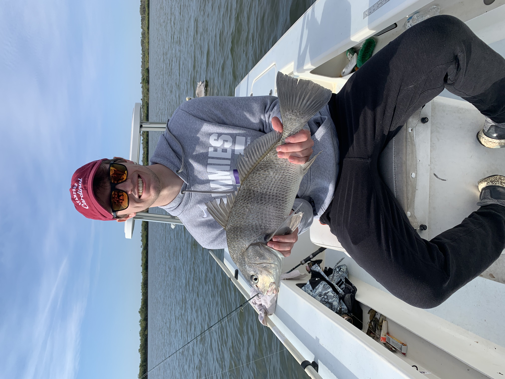

Basketball
I've been playing basketball since I was a little kid and its my favorite sport. I'm a fan of the Timberwolves but also the Bulls since Demar DeRozan is my favorite player. I played basketball throughout highschool but now I just play intramurals here at St. Thomas. Pictured below is me at an annual 3 on 3 tournament my friends from highschool put on.
Snowboarding
Snowboarding is one of my favorite past times in the winter. It gives me an opportunity to go outside and enjoy the outdoors in the winter even when its freezing cold out. Pictured below is me at Afton Alps in Woodbury. I usually end up taking a yearly trip to Colorado with my family to ride bigger slopes.
Gaming
I play a lot of different games in my freetime. It's a great way to bond with friends and be able to interact with them when they're not in the same room as you. Some of my best friends are people who I've met gaming online. My favorite game to play are Call of Duty Modern Warfare 2, Civilization 5, and NBA 2K22.
Fishing
I was never a big fisherman growing up but I've gotten into it recently. My Mom has recently moved to Florida and it's a lot of fun being able to catch larger fish in the swamps around where she lives. It's a lot different to fishing in Minnnesota as there is way more variety in what you can catch.

